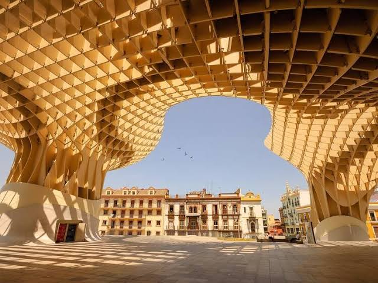
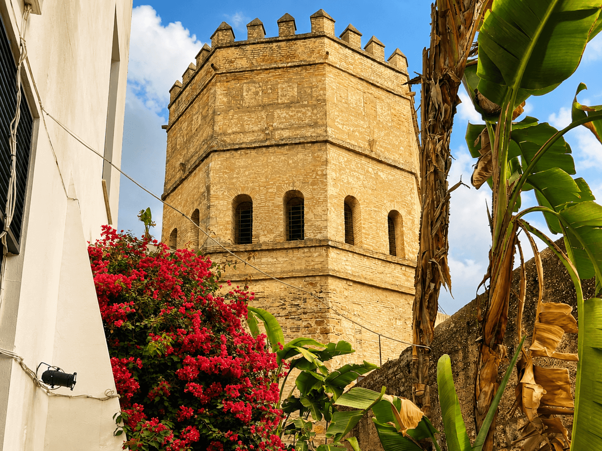

Seville was founded over 3,000 years ago and is one of Europe's oldest cities, shaped by Romans, Moors and Christians. Gunvor has lived in Seville for over 30 years, and she's still surprised. Here is the story of this extraordinary city, as she's come to know it.
A city older than Rome
Most people know Seville is old. Few know how old. According to legend, the city was founded by Hercules himself — and while historians are a bit more sober about it, we know the site has been inhabited for over three thousand years. Phoenicians, Romans, Visigoths — all left their mark here before the Arabs arrived and transformed everything.
The Romans called it Hispalis and made it an important port on the Guadalquivir river. Traces of them can be found all over the city — the marble columns on Alameda de Hércules, mosaics beneath modern apartment blocks, and just outside the city lies Itálica, one of the Roman Empire's best-preserved cities with an impressive amphitheatre.
«Seville isn't one city. It's a dozen civilisations stacked on top of each other — and each of them left something beautiful behind.»

Al-Andalus — when Seville was one of the world's largest cities
In the year 711, Berbers from North Africa crossed the Strait of Gibraltar and conquered the Iberian Peninsula in record time. Under Moorish rule — the period we know as Al-Andalus — Seville became Isbiliya, a great city where Muslims, Christians and Jews lived side by side.
Philosophy, mathematics, astronomy, architecture and medicine flourished here while the rest of Europe lived through what we call the Dark Ages. Libraries with a hundred thousand books. Public baths. Street lighting. It was a different world.
The Alcázar and Giralda — the legacy they couldn't erase
When the Christian kings reconquered Seville in 1248 under Fernando III, they faced a rather human dilemma: Moorish Seville was too beautiful to tear down. Rather than destroying what the Moors had built, they built upon it — with Moorish craftsmen, Moorish materials and Moorish style.
The Giralda tower was originally built as a minaret for the great mosque in 1184. When the Christians took over, they simply added a bell tower on top and called it a cathedral. Today it's one of Europe's most photographed towers.

«The Giralda is originally an Islamic minaret. It might be the most beautiful example of how Seville has always known how to take the best from every culture and make it its own.»
1492 — the year that changed the world from Seville
It was here Columbus returned after discovering America. It was Seville — not Madrid, not Lisbon — that for nearly two hundred years was the world's richest and busiest port. Silk, spices, silver and gold passed through Seville's harbour.
The Cathedral — already under construction — was completed as the world's largest, precisely because they wanted to show the world what Seville had become.
Seville today — the past as part of the future
Today Seville is the capital of Andalucía and Spain's fourth-largest city. Semana Santa and Feria de Abril draw millions of visitors every year. The tapas culture here is a world of its own — something you experience body and soul as you go bar to bar on a warm late Friday evening in Triana.
The tourists are here. The hotels are here. But Sevillians live their lives almost undisturbed alongside it all. That's the Seville life Gunvor tries to show — not the postcard images, but the living, noisy, fragrant everyday life of a city that has become her home.

- Founded over 3,000 years ago — one of Europe's oldest cities
- Capital of Andalucía and Spain's fourth-largest city
- The Alcázar — a royal residence for over 700 years, still in use
- The Cathedral is the world's third-largest and a UNESCO World Heritage Site
- The Giralda tower was originally built as an Islamic minaret in 1184
- Seville was the world's richest port for nearly 200 years after 1492
- Over 300 sunny days a year
Frequently asked questions
Seville was founded over 3,000 years ago and is one of Europe's oldest cities.
Seville is the capital of Andalucía and Spain's fourth-largest city.
After 1492, Seville held a monopoly on trade with the Americas, and was the world's richest port for nearly 200 years.